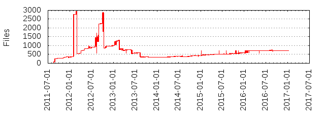

Files
- Total files
- 722
- Total lines
- 90297
- Average file size
- 17081.66 bytes
| Extension | Files (%) | Lines (%) | Lines/file |
|---|
| 112 (15.51%) | 685 (0.76%) | 6 |
| cjson | 1 (0.14%) | 2 (0.00%) | 2 |
| cmd | 8 (1.11%) | 85 (0.09%) | 10 |
| coffee | 197 (27.29%) | 50738 (56.19%) | 257 |
| cson | 36 (4.99%) | 1481 (1.64%) | 41 |
| css | 11 (1.52%) | 40 (0.04%) | 3 |
| csv | 1 (0.14%) | 5 (0.01%) | 5 |
| gif | 4 (0.55%) | 7246 (8.02%) | 1811 |
| git | 2 (0.28%) | 2 (0.00%) | 1 |
| html | 1 (0.14%) | 9 (0.01%) | 9 |
| icns | 4 (0.55%) | 12291 (13.61%) | 3072 |
| ico | 5 (0.69%) | 932 (1.03%) | 186 |
| idx | 2 (0.28%) | 84 (0.09%) | 42 |
| in | 3 (0.42%) | 76 (0.08%) | 25 |
| js | 141 (19.53%) | 19879 (22.02%) | 140 |
| json | 53 (7.34%) | 2327 (2.58%) | 43 |
| less | 31 (4.29%) | 1880 (2.08%) | 60 |
| md | 33 (4.57%) | 9494 (10.51%) | 287 |
| node | 3 (0.42%) | 0 (0.00%) | 0 |
| pack | 2 (0.28%) | 5318 (5.89%) | 2659 |
| plist | 2 (0.28%) | 1596 (1.77%) | 798 |
| png | 27 (3.74%) | 6534 (7.24%) | 242 |
| sample | 27 (3.74%) | 1488 (1.65%) | 55 |
| sh | 4 (0.55%) | 209 (0.23%) | 52 |
| ts | 2 (0.28%) | 3 (0.00%) | 1 |
| txt | 4 (0.55%) | 204 (0.23%) | 51 |
| woff | 2 (0.28%) | 156 (0.17%) | 78 |
| yml | 4 (0.55%) | 159 (0.18%) | 39 |